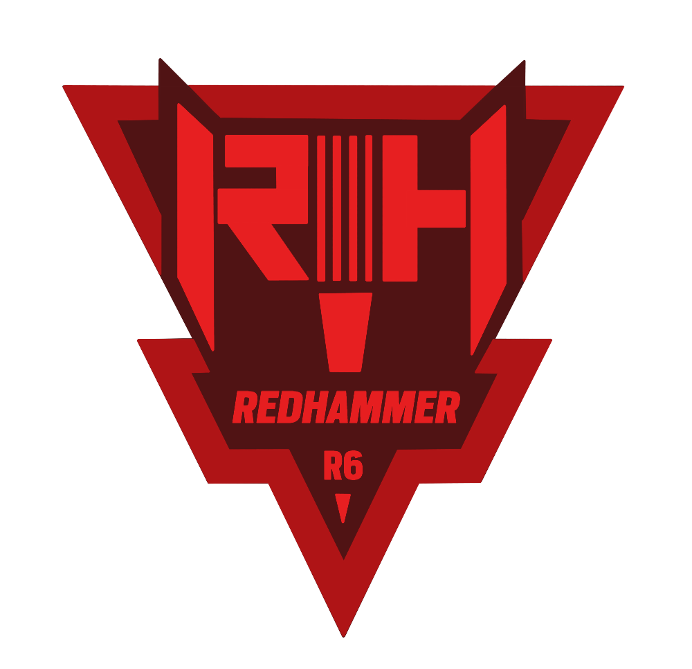

Név: Bo-Ram Choi
Születési dátum:1990 Április 25.
Születési hely: Busan, South Korea
“I may not have family, but I have Redhammer.”
Choi Busanban, Dél-Koreában született. Bár korai napjainak körülményei nem tisztázottak, tudjuk, hogy egy tűzoltóparancsnokságra hagyták, majd árvaházakban nevelték fel. Az korai gondozók leírása alapján ravasz gyerekről van szó, aki tudta, mikor kell alacsonyan tartania a fejét, és mikor kell kitűnnie. Ifjúkorában kezdődött hobbi, mint a K-Metal és a szénrajz iránti érdeklődés, megmaradt harmincas éveire is - Choi állhatatosságának és hűségének tanúbizonysága. Choi azonnal csatlakozott a Koreai Köztársaság Fegyveres Erőihez (ROKA), amikor elérte a korát, és elismeréseket szerzett, gyorsan előléptek őt a főtörzsőrmester (Sang-sa) rangig. Hamarosan a 35. Kommandó Zászlóalj (Tarantula) csapatához csatlakozott, ahol egy szorosan összetartó teljes női egységben elsajátította az épületmentést, a túszmentést, a VIP védelmet és az előrenyomuláskor alkalmazott haladó technológiák használatát egy ellenség elleni támadás során. A Tarantula Egység egy nagy teljesítményű CTU, amely méltán hírnevet szerzett, és Choi kiemelkedő szakembere annak. Érdemes megemlíteni, hogy ő vezetett egy sor harci és hírszerzési műveletet. Míg más tagok visszavonultak a magánéletbe, ő maradt, gyakran egységének legidősebb tagja. Az értékelések azt említik, hogy jól boldogul ebben a vezetői szerepben, és leírják mint egy rendkívül védelmező katonát, aki mindent megtesz a társai biztonsága érdekében.
Szervezet: Redhammer 